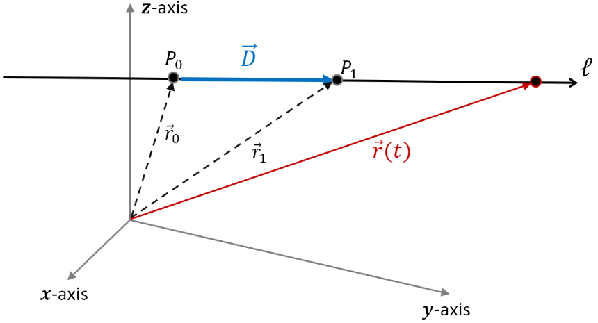

Lesson 4: Vector Equation of a Line
Consider the line \(\ell\) in the direction of the vector \(\vec{D}\) and containing the two distinct points \(P_0 = (x_0, y_0, z_0)\) and \(P_1 = (x_1, y_1, z_1)\).

As shown in the figure, let \(\vec{r}_0\) be the position vector with terminal point at \(P_0\).
Similarly, let \(\vec{r}_1\) be the position vector with terminal point at \(P_1\).
Vector \(\vec{D}\) is in the direction of the line. It is the result of the following vector subtraction.
A vector equation for line \(\ell\) is given below. This vector equation traces out the line as a function of the parameter \(t\).
Vector Equation of a Line
In bold notation, this is written as \(\mathbf{r}(t) = \mathbf{r}_0 + t\mathbf{D}\).
Write the direction vector as \(\vec{D} = \langle a, b, c \rangle\) and the vector equation as \(\vec{r}(t) = \langle x, y, z \rangle\). Then the vector equation becomes the following.
Matching the components gives the parametric equations of the line.
Parametric Equations of a Line
If \(a\), \(b\), and \(c\) are all nonzero, each parametric equation can be solved for \(t\). Since all three expressions are equal to \(t\), they are equal to each other.
Symmetric Equations of a Line
An Example
Find a vector equation of the line containing the points \(P_0 = (1, 2, 1)\) and \(P_1 = (6, 4, 3)\). Then find parametric equations for the line and symmetric equations for the line.
First find the direction vector.
Using \(\vec{r}_0 = \langle 1, 2, 1 \rangle\), a vector equation for the line is given below.
Matching the components gives parametric equations for the line.
Since \(5\), \(2\), and \(2\) are all nonzero, solving each equation for \(t\) gives symmetric equations for the line.